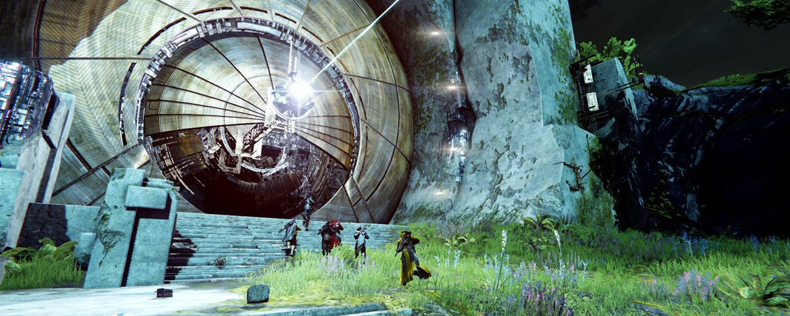
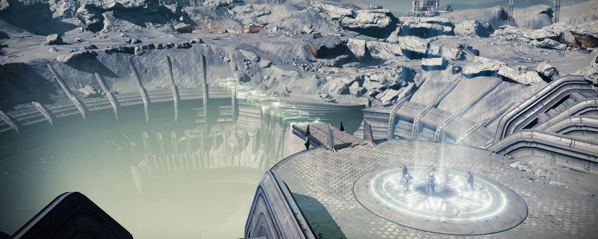
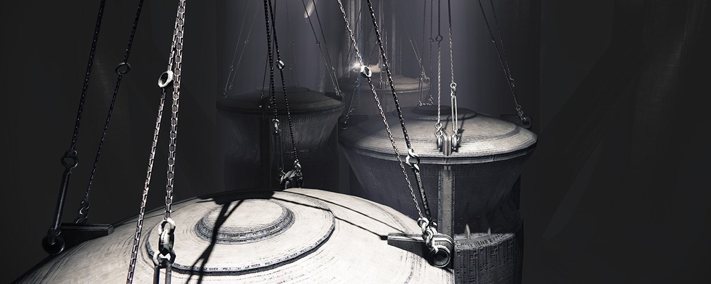

Dentro de la historia del clan hay muchos logros para resaltar: Desde completar raids, pasando por mazmorras, ocasos de dificultad maestro, llegar al faro en las Pruebas de Osiris, entre otros.
Pero los logros mas importantes, y que valen la pena resaltar en la historia del clan, son:
- La primera raid completada por parte de los miembros iniciales de Mag Tured, la cual fue "La Camara de Cristal", el dia 27 de octubre de 2014.
- La primera raid completada integramente por miembros del clan, sin ayuda externa, el dia 19 de noviembre de 2014.
- La incorporacion de Camilo Medina, alias "Equinox", al clan para ayudar a completar la raid "La caida de Crota" a fines de 2014.
- Las raids completas de "La caida del rey" y "La ira de las maquinas" en 2015 y 2016 respectivamente.
- La llegada del clan a Destiny 2 en 2017.
- Las raids completadas de Leviatan, junto con sus extensiones, Ultimo Deseo, Jardin de la Salvacion, la Cripta de la Piedra profunda, El Voto del Discipulo y las remasterizaciones de La Caida del Rey y La Camara de Cristal.
- Las mazmorras completadas en solitario por parte de Camilo Medina.
Y muchos logros mas que vendran en el futuro